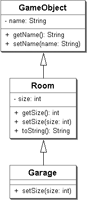
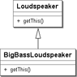

5.10 Methoden überschreiben
Wir haben gesehen, dass eine Unterklasse durch Vererbung die sichtbaren Eigenschaften ihrer Oberklasse erbt. Die Unterklasse kann nun wiederum Methoden hinzufügen. Dabei zählen überladene Methoden – also Methoden, die den gleichen Namen wie eine andere Methode aus einer Oberklasse tragen, aber eine andere Parameteranzahl oder andere Parametertypen haben – zu ganz normalen, hinzugefügten Methoden.
5.10.1 Methoden in Unterklassen mit neuem Verhalten ausstatten
Besitzt eine Unterklasse eine Methode mit dem gleichen Methodennamen und der exakten Parameterliste (also der gleichen Signatur) wie schon die Oberklasse, so überschreibt die Unterklasse die Methode der Oberklasse. Ist der Rückgabetyp void oder ein primitiver Typ, so muss er in der überschreibenden Methode der gleiche sein. Bei Referenztypen kann der Rückgabetyp etwas variieren, doch das werden wir später genauer sehen.
Implementiert die Unterklasse die Methode neu, so sagt sie auf diese Weise: »Ich kann’s besser.« Die überschreibende Methode der Unterklasse kann demnach den Programmcode spezialisieren und Eigenschaften nutzen, die in der Oberklasse nicht bekannt sind. Die überschriebene Methode der Oberklasse ist dann erst einmal aus dem Rennen, und ein Methodenaufruf auf einem Objekt der Unterklasse würde sich in der überschriebenen Methode verfangen.
Überschreiben von toString()
Aus der absoluten Basisklasse java.lang.Object bekommen alle Unterklassen eine Methode toString() vererbt, die meist zu Debug-Zwecken eine Objektkennung ausgibt:
Listing 5.69: java/lang/Object.java, toString()
public String toString()
{
return getClass().getName() + "@" + Integer.toHexString(hashCode());
}
Die Methode liefert den Namen der Klasse, gefolgt von einem "@" und einer hexadezimalen Kennung. Die Klasse GameObject ohne eigenes toString() soll die Wirkung testen:
Listing 5.70: com/tutego/insel/game/ve/GameObject.java, GameObject
public class GameObject
{
private String name;
public String getName()
{
return name;
}
public void setName( String name )
{
this.name = name;
}
}
Auf einem GameObject-Objekt liefert toString() eine etwas kryptische Kennung:
GameObject go = new GameObject();
out.println( go.toString() ); // com.tutego.insel.game.ve.GameObject@e48e1b
Es ist also eine gute Idee, toString() in den Unterklassen zu überschreiben. Eine Stringkennung sollte den Namen der Klasse und die Zustände eines Objekts beinhalten. Für einen Raum, der einen (geerbten) Namen und eine eigene Größe hat, kann dies wie folgt aussehen:
Listing 5.71: com/tutego/insel/game/ve/Room.java, Room
public class Room extends GameObject
{
private int size;
public void setSize( int size )
{
if ( size > 0 )
this.size = size;
}
public int getSize()
{
return size;
}
@Override public String toString()
{
return String.format( "Room[name=%s, size=%d]", getName(), getSize() );
}
}
Abbildung 5.25: Room ist eine Unterklasse von GameObject und hat ein eigenes toString()
Und der Test sieht so aus:
Listing 5.72: com/tutego/insel/game/ve/Playground.java, main()
Room winterfield = new Room();
winterfield.setName( "Winterfield" );
winterfield.setSize( 2040000 );
System.out.println( winterfield ); // Room[name=Winterfield, size=2040000]
Zur Erinnerung: Ein println() auf einem beliebigen Objekt ruft die toString()-Methode von diesem Objekt auf.
Die Annotation @Override
Unsere Beispielklasse Room nutzt die Annotation @Override an der Methode toString() und macht auf diese Weise deutlich, dass die Unterklasse eine Methode der Oberklasse überschreibt. Die Annotation @Override bedeutet nicht, dass diese Methode in Unterklassen überschrieben werden muss, sondern nur, dass sie selbst eine Methode überschreibt. Annotationen sind zusätzliche Modifizierer, die entweder vom Compiler überprüft werden oder von uns nachträglich abgefragt werden können. Obwohl wir die Annotation @Override nicht nutzen müssen, hat sie den Vorteil, dass der Compiler überprüft, ob wir tatsächlich eine Methode aus der Oberklasse überschreiben – haben wir uns im Methodennamen verschrieben und würde die Unterklasse auf diese Weise eine neue Methode hinzufügen, so würde der Compiler das als Fehler melden. Fehler wie tostring() fallen schnell auf. Überladene Methoden und überschriebene Methoden sind etwas anderes, da eine überladene Methode mit der Ursprungsmethode nur »zufällig« den Namen teilt, aber sonst keinen Bezug zur Logik hat. Und so hilft @Override, dass Entwickler wirklich Methoden überschreiben und nicht aus Versehen Methoden mit falschen Parametern überladen.
| Hinweis |
|
Seit Java 6 ist die Annotation @Override auch an Methoden gültig, die Operationen aus Schnittstellen implementieren; unter Java 5 war das noch ein Fehler. Die Beispiele der Insel sind der Syntax von Java 6 geschrieben. Zu Schnittstellen kommen wir im Abschnitt 5.13. |
Garantiert überschrieben? *
Überschrieben werden nur Methoden, die exakt mit der Signatur einer Methode aus der Oberklasse übereinstimmen. Sind Parametertypen gleich, so müssen sie auch aus dem gleichen Paket stammen. So kann es passieren, dass eine Unterklasse Sub doch nicht die Methode printDate() aus Super überschreibt, obwohl es auf den ersten Blick so aussieht:
| Deklaration der Basisklasse | Überladene, keine überschreibene Methode |
|
import java.util.Date; |
import java.sql.Date; |
Zwar sehen die Signaturen optisch gleich aus, da aber Date aus verschiedenen Paketen stammt, ist die Signatur nicht wirklich gleich. Die Methode aus printDate() aus Sup überlädt printDate() aus Super, aber überschreibt sie nicht. Letztendlich bietet Sub zwei Methoden:
- void printDate( java.util.Date date ) {}
- void printDate( java.sql.Date date ) {}
Es ist gut, wenn eine überschreibende Methode explizit kenntlich gemacht wird. Dazu gibt es die Annotation @Override, die an die Methode der Unterklasse gesetzt werden sollte. Denn verspricht eine Methode das Überschreiben, doch macht sie das, wie in unserem Beispiel, nicht, ergibt das einen Compilerfehler, und dem Entwickler wird der Fehler vor Augen geführt. Mit @Override wäre dieser Fehler aufgefallen.
5.10.2 Mit super an die Eltern
Wenn wir eine Methode überschreiben, dann entscheiden wir uns für eine gänzlich neue Implementierung. Was ist aber, wenn die Funktionalität im Großen und Ganzen gut war und nur eine Kleinigkeit fehlte? Im Fall der überschriebenen toString()-Methode realisiert die Unterklasse eine völlig neue Implementierung und bezieht sich dabei nicht auf die Logik der Oberklasse.
Möchte eine Unterklasse sagen: »Was meine Eltern können, ist doch gar nicht so schlecht«, kann mit der speziellen Referenz super auf die Eigenschaften im Namensraum der Oberklasse zugegriffen werden (natürlich ist das Objekt hinter super und this das gleiche, nur der Namensraum ist ein anderer). Auf diese Weise können Unterklassen immer noch etwas Eigenes machen, aber die Realisierung aus der Elternklasse ist weiterhin verfügbar.
In unserem Spiel gibt es Räume mit einer Größe. Die Größe lässt sich mit setSize() setzen und mit getSize() erfragen. Eine Konsistenzprüfung in setSize() erlaubt nur Größen echt größer null. Wenn nun eine Garage als besonderer Raum eine gewisse Größe nicht überschreiten darf – sonst wäre er keine Garage –, lässt sich setSize() überschreiben und immer dann das setSize() der Oberklasse zum tatsächlichen Setzen des Attributs aufrufen, wenn die Größe im richtigen Bereich lag:
Listing 5.73: com/tutego/insel/game/ve/Garage.java, Garage
public class Garage extends Room
{
private static final int MAX_GARAGE_SIZE = 40;
@Override public void setSize( int size )
{
if ( size <= MAX_GARAGE_SIZE )
super.setSize( size );
}
}
Stünde statt super.setSize(size) nur setSize(size), würde ein Methodenaufruf in die Endlosrekursion führen.
Abbildung 5.26: Garage bietet ein eigenes setSize() wie die Oberklasse Room
Eigenschaften der super-Referenz *
Nicht nur in überschriebenen Methoden kann die super-Referenz sinnvoll eingesetzt werden: Sie ist auch interessant, wenn Methoden der Oberklasse aufgerufen werden sollen und nicht eigene überschriebene. So macht das folgende Beispiel klar, dass auf jeden Fall toString() der Oberklasse Object aufgerufen werden soll und nicht die eigene überschriebene Variante:
Listing 5.74: ToStringFromSuper.java
public class ToStringFromSuper
{
public ToStringFromSuper()
{
System.out.println( super.toString() ); // Aufruf von Object toString()
}
@Override public String toString()
{
return "Nein";
}
public static void main( String[] args )
{
new ToStringFromSuper(); // ToStringFromSuper@3e25a5
}
}
Natürlich kann super nur dann eingesetzt werden, wenn in der Oberklasse die Methode eine gültige Sichtbarkeit hat. Es ist also nicht möglich, mit diesem Konstrukt das Geheimnisprinzip zu durchbrechen.
Eine Aneinanderreihung von super-Schlüsselwörtern bei einer tieferen Vererbungshierarchie ist nicht möglich. Hinter einem super muss eine Objekteigenschaft stehen; sie gilt also für eine überschriebene Methode oder ein überlagertes Attribut. Anweisungen wie super.super.lol() sind somit immer ungültig. Eine Unterklasse empfängt alle Eigenschaften ihrer Oberklassen als Einheit und unterscheidet nicht, aus welcher Hierarchie etwas kommt.
5.10.3 Finale Klassen und finale Methoden
Soll eine Klasse keine Unterklassen bilden, werden Klassen mit dem Modifizierer final versehen. Dadurch lässt sich vermeiden, dass Unterklassen Eigenschaften nachträglich verändern können. Ein Versuch, von einer finalen Klasse zu erben, führt zu einem Compilerfehler. Dies schränkt zwar die objektorientierte Wiederverwendung ein, wird aber aufgrund von Sicherheitsaspekten in Kauf genommen. Eine Passwortüberprüfung soll zum Beispiel nicht einfach überschrieben werden können.
In der Java-Bibliothek gibt es eine Reihe finaler Klassen, von denen wir einige bereits kennen:
- String, StringBuffer, StringBuilder
- Integer, Double ... (Wrapper-Klassen)
- Math
- System
- Font, Color
| Tipp |
|
Eine protected-Eigenschaft in einer als final deklarierten Klasse ergibt wenig Sinn, da |
Nicht überschreibbare (finale) Methoden
In der Vererbungshierarchie möchte ein Designer in manchen Fällen verhindern, dass Unterklassen eine Methode überschreiben und mit neuer Logik implementieren. Das verhindert der zusätzliche Modifizierer final an der Methodendeklaration. Da Methodenaufrufe immer dynamisch gebunden werden, könnte ein Aufrufer unbeabsichtigt in der Unterklasse landen, was finale Methoden vermeiden.
Dazu ein Beispiel: Das GameObject speichert einen Namen intern im protected-Attribut name und erlaubt Zugriff nur über einen Setter/Getter. Die Methode setName() testet, ob der Name ungleich null ist und mindestens ein Zeichen enthält. Diese Methode soll final sein, denn eine Unterklasse könnte diese Zugriffsbeschränkungen leicht aushebeln und selbst die protected-Variable name beschreiben, auf die die Unterklasse Zugriff hat:
Listing 5.75: com/tutego/insel/game/vg/GameObject.java, GameObject
public class GameObject
{
protected String name;
public String getName()
{
return name;
}
public final void setName( String name )
{
if ( name != null && !name.isEmpty() )
this.name = name;
}
}
Bei dem Versuch, in einer Unterklasse die Methode zu überschreiben, meldet der Compiler einen Fehler:
Listing 5.76: com/tutego/insel/game/vg/Player.java, Player
public class Player extends GameObject
{
@Override
public void setName( String name ) // N
^ Cannot override the final method from GameObject
{
this.name = name;
}
}
| Hinweis |
|
Auch private Methoden können final sein, aber private Methoden lassen sich ohnehin nicht überschreiben (sie werden überlagert), sodass final überflüssig ist. |
5.10.4 Kovariante Rückgabetypen
Überschreibt eine Methode mit einem Referenztyp als Rückgabe eine andere, so kann die überschreibende Methode einen Untertyp des Rückgabetyps der überschriebenen Methode als Rückgabetyp besitzen. Das nennt sich kovarianter Rückgabetyp und ist sehr praktisch, da sich auf diese Weise Entwickler oft explizite Typanpassungen sparen können.
Ein Beispiel soll dies verdeutlichen: Die Klasse Loudspeaker deklariert eine Methode getThis(), die lediglich die this-Referenz zurückgibt. Eine Unterklasse überschreibt die Methode und liefert den spezielleren Untertyp:
Listing 5.77: BigBassLoudspeaker.java
class Loudspeaker
{
Loudspeaker getThis()
{
return this;
}
}
class BigBassLoudspeaker extends Loudspeaker
{
@Override
BigBassLoudspeaker getThis() // statt »Loudspeaker getThis()«
{
return this;
}
}
Die Unterklasse BigBassLoudspeaker überschreibt die Methode getThis(), auch wenn der Rückgabetyp nicht Loudspeaker, sondern BigBassLoudspeaker heißt.
Abbildung 5.27: BigBassLoudspeaker ist ein spezieller LoudSpeaker
Der Rückgabetyp muss auch nicht zwingend der Typ der eigenen Klasse sein. Gäbe es zum Beispiel mit Plasmatweeter eine zweite Unterklasse von Loudspeaker, so könnte getThis() von BigBassLoudspeaker auch den Rückgabetyp Plasmatweeter deklarieren. Hauptsache, der Rückgabetyp der überschreibenden Methode ist eine Unterklasse des Rückgabetyps der überschriebenen Methode der Basisklasse.
| Hinweis |
|
Merkwürdig in diesem Zusammenhang ist, dass es in Java schon immer veränderte Zugriffsrechte gegeben hat. Eine Unterklasse kann die Sichtbarkeit erweitern. Auch bei Ausnahmen kann eine Unterklasse speziellere Ausnahmen beziehungsweise ganz andere Ausnahmen als die Methode der Oberklasse erzeugen. |
5.10.5 Array-Typen und Kovarianz *
Die Aussage »Wer wenig will, kann viel bekommen« gilt auch für Arrays, denn wenn eine Klasse U eine Unterklasse einer Klasse O ist, ist auch U[] ein Untertyp von O[]. Diese Eigenschaft nennt sich Kovarianz. Da Object die Basisklasse aller Objekte ist, kann ein Object-Array auch alle anderen Objekte aufnehmen.
Bauen wir uns eine statische Methode set(), die einfach ein Element an die erste Stelle ins Feld setzt:
Listing 5.78: ArrayCovariance.java, set()
public static void set( Object[] array, Object element )
{
array[ 0 ] = element;
}
Die Kovarianz ist beim Lesen von Eigenschaften nicht problematisch, beim Schreiben jedoch potenziell gefährlich. Schauen wir, was mit unterschiedlichen Array- und Elementtypen passiert:
Listing 5.79: ArrayCovariance.java, main()
Object[] objectArray = new Object[ 1 ];
String[] stringArray = new String[ 1 ];
System.out.println( "It's time for change" instanceof Object ); // true
set( stringArray, "It's time for change" );
set( objectArray, "It's time for change" );
set( stringArray, new StringBuilder("It's time for change") ); // N
Der String lässt sich in einem String-Array abspeichern. Der zweite Aufruf funktioniert ebenfalls, denn ein String lässt sich auch in einem Object-Feld speichern, da ein Object ja ein Basistyp ist. Vor einem Dilemma stehen wir dann, wenn das Feld eine Referenz speichern soll, die nicht typkompatibel ist. Das zeigt der dritte set()-Aufruf: Zur Compilezeit ist alles noch in Ordnung, aber zur Laufzeit kommt es zu einer ArrayStoreException:
Exception in thread "main" java.lang.ArrayStoreException: java.lang.StringBuilder
at ArrayCovariance.set(ArrayCovariance.java:5)
at ArrayCovariance.main(ArrayCovariance.java:19)
Das haben wir aber auch verdient, denn ein StringBuilder-Objekt lässt sich nicht in einem String-Feld speichern. Selbst ein new Object() hätte zu einem Problem geführt.
Das Typsystem von Java kann diese Spitzfindigkeit nicht zur Übersetzungszeit prüfen. Erst zur Laufzeit ist ein Test mit dem bitteren Ergebnis einer ArrayStoreException möglich. Bei Generics ist dies etwas anders, denn hier sind vergleichbare Konstrukte bei Vererbungsbeziehungen verboten.
Ihr Kommentar
Wie hat Ihnen das <openbook> gefallen? Wir freuen uns immer über Ihre freundlichen und kritischen Rückmeldungen.
 Jetzt bestellen
Jetzt bestellen


{kind=link}
{kind=link}
{kind=link}